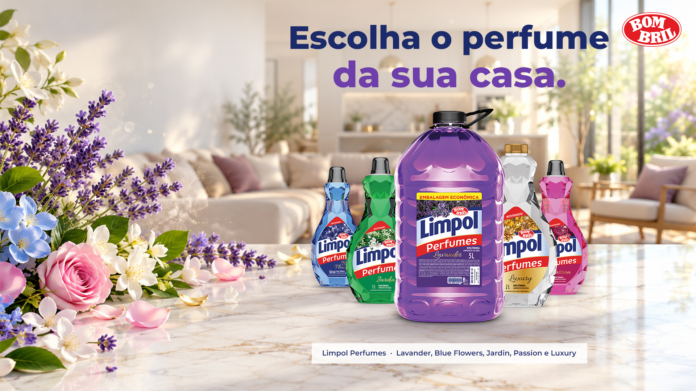

Resolve: ser vista
Ponta · 100 x 180 cm
Loja · recorte · executivo +
Display aramado
A linha inteira, organizada por cor, na ponta do corredor.
 ×
×
Do key visual à gôndola: a linha Limpol Perfumes vista, entendida e escolhida em toda a rede.
×
Varejo e indústria na mesma mesa. A 75 LAB cria, fabrica, instala e mede o ponto de venda.
Fonte: 75 LAB, carteira de clientes de 2025 e 2026.
×O crescimento veio com inovação: lava-roupas e limpador perfumado.
Fontes: Bombril, Relações com Investidores, Press Release 4T25 (receita, volume e inovações); SuperHiper/ABRAS, 17/03/2025 (Limpol Perfumes: 5 fragrâncias, 500 ml a 5 L); Ypê, set/2025; Veja, site oficial.

1234A frase, as cores e as flores se repetem na testeira, no display, no wobbler e na régua: o shopper reconhece a campanha em qualquer ponto da loja.
Atraem e fazem sentir o perfume
Expõem e explicam junto da categoria
Convertem na hora da decisão
Estratégia: fazer a inovação ser vista, entendida e escolhida, com o mesmo KV do início ao fim da loja.
A linha inteira, organizada por cor, na ponta do corredor.
O shopper sente o perfume e leva o que gostou.
Explica as cinco fragrâncias junto da categoria. Monta em 10 minutos.
Chama o olho para cada fragrância, sem cobrir o preço.
Cor e nome de cada perfume onde a mão decide.
Toda peça sai da fábrica com um código único.
O que é: o promotor escaneia ao instalar. Benefício: foto e GPS provam que entrou na loja.
O que é: uma tag no display avisa todo dia. Benefício: você sabe se segue montado e no lugar.
Onde está montada, no lugar e abastecida, num relatório só.
Sem fase de teste: a primeira onda já entra em todas as lojas da rede escolhida.
Prazo ajustado na visita às lojas da rede escolhida.
Daniel Coimbra, CEO · daniel.coimbra@75lab.com.br